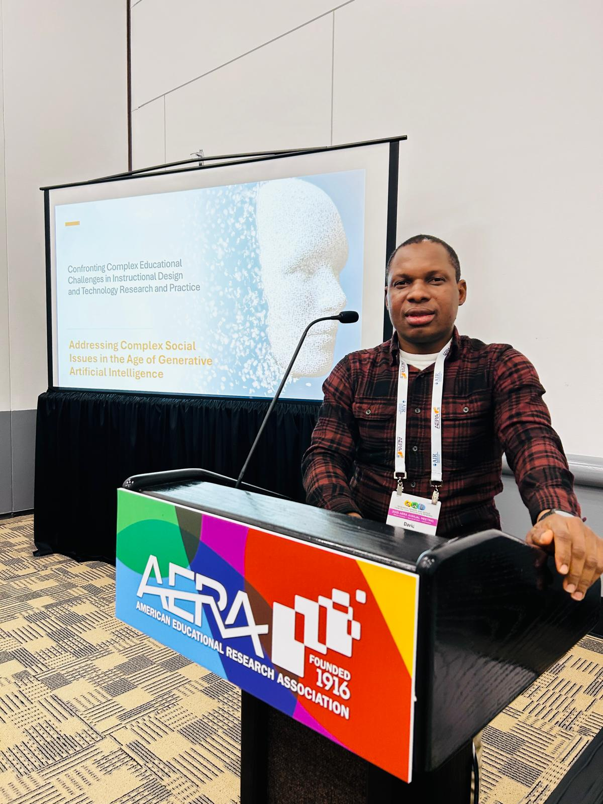
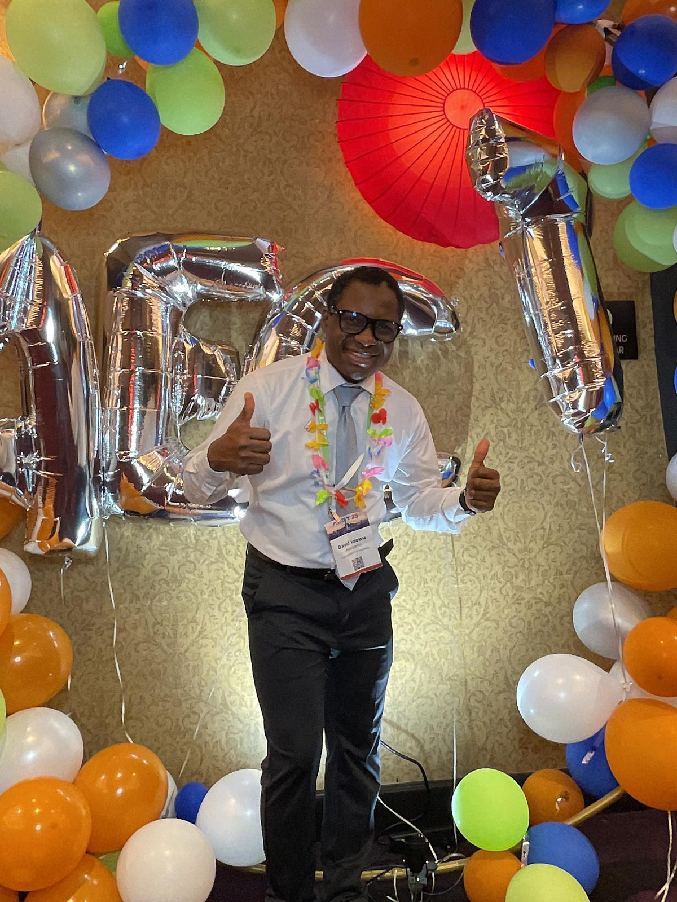
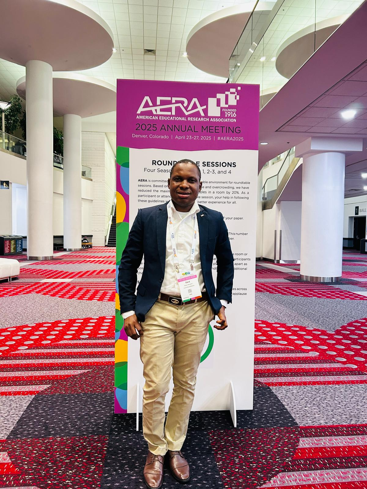

Research Interest
Immersive Learning Systems
Designs and studies virtual and mixed reality environments for authentic STEM learning, safety training, and performance transfer.



Use these links for publications, lab affiliation, and the full downloadable CV.
Citation record, papers, and scholarly impact.
Open resourceResearch profile, project activity, and collaborations.
Open resourceUniversity of Alabama lab home and research context.
Open resourceDownload the current Word CV that drives this site.
Open resourceThe themes below summarize the questions and design commitments that connect publications, funded projects, and collaborative work.
Designs and studies virtual and mixed reality environments for authentic STEM learning, safety training, and performance transfer.

Explores generative AI, AI literacy, instructional decision-making, and responsible integration of emerging tools in learning environments.
Uses multimodal evidence, behavioral traces, and statistical reasoning to understand how learners engage and improve over time.
Advances broadening participation in STEM and computing through inclusive design, teacher development, and responsive learning pathways.
Each tile links to the reflection and artifacts for that course.


Journal articles, book chapters, proceedings, and conference presentations are rebuilt each time the source CV is updated.
Awoyemi, I. D., Moon, J., Aldemir, T., Ghooreian, A., & Sabanwar, V. (Under review). A Systematic Review of Empirical Research on AI in K-12 STEM Education (2020-2025) through a Sociotechnical Lens (Manuscript Number: ETRD-D-26-01416)
Awoyemi, I. D., Moon, J., Abu, S., & Siyuan, S. (Revision). From experience to action: sequential dynamics of experiential learning in immersive virtual reality-supported safety training (Manuscript Number: 264134817)
McNeill, L., Uddin, M. M., Abu, S., Pei, M., Awoyemi, I. D., & Regalado, L. (2025). Identifying the AI Literacy Gap: A Mixed-Methods Analysis of Industry Needs and Graduate Preparedness. Frontiers in Education. [Accepted]
F Luo, J Amayou, F Nasrin, P Abedini, V Mousavi, ID Awoyemi, A Hutchison, C Cao, C Crawford. Promoting elementary students’ computer science conceptual knowledge and coding performance: A mixed methods case study (Manuscript Number: UJRT-2025-1006.R2)
Moon, J., Awoyemi, I. D., Abu, S., Kim, E., & Marchiori, R. (Submitted). A Bayesian Meta-Analysis of Virtual Reality-based Safety Training in the Construction Sector (Manuscript Number: SAFETY-D-26-01418)
Awoyemi, I. D., Moon, J., Abu, S., & Siyuan, S. (Under review). Design and development research of immersive virtual reality-supported safety training for construction engineering education. Educational Technology Research and Development (Manuscript Number: ETRD-D-26-00469)
Awoyemi, I. D., Abu S., Yuvaraja H. K., Patiballa S. K., & Moon, J. (Under review). Exploring fidelity dimensions in extended reality technologies for mechanical engineering education: A Systematic Review. TechTrends (Manuscript Number: TECH-D-25-00383)
Moon J., Awoyemi I. D., & Abu S. (2026). Decoding learning states in vr safety training: a bayesian cognitive diagnostic approach to microgenetic behavioral analytics. Behaviourmetrika. 1-30. https://doi.org/10.1007/s41237-025-00286-1
Awoyemi, I. D., Feliza Marie S. M., & Moon, J. (2024). A narrative review on immersive virtual reality in enhancing high school students’ Mathematics competence: From TPACK perspective. Journal of Korean Society of Mathematical Education Series A. 63(2), 295-318. https://doi.org/10.7468/mathedu.2024.63.2.295
Hong, S., Moon, J., Eom, T., Awoyemi, I. D., & Hwang, J. (2025). Generative AI-Enhanced Virtual Reality Simulation for Pre-Service Teacher Education: A Mixed-Methods Analysis of Usability and Instructional Utility for Course Integration. Education Sciences, 15(8), 997. https://doi.org/10.3390/educsci15080997
Marchiori, R., Song, S., Moon, J., Awoyemi, D., Ghooreian, A., & Ramenzapour, E. (2025). A Systematic Review of Technology‐Enhanced Learning Approaches to Foster Construction Engineering and Management Competencies. Computer Applications in Engineering Education, 33(5), e70074. https://doi.org/10.1002/cae.70074
Luo, F., Nasrin, F., & Awoyemi, I. D. (2025). Broadening Participation in Computing Through Cultivating Teacher Professional Growth: Stories from Teachers of Color. Education Sciences, 15(7), 848. https://doi.org/10.3390/educsci15070848
Apata, O. E., Ajose, S. T., Apata, B. O., Olaitan, G. I., Oyewole, P. O., Awoyemi, I. D., .... & Feyijimi, T. (2025). Artificial intelligence in higher education: a systematic review of contributions to SDG 4 (quality education) and SDG 10 (reduced inequality). International Journal of Educational Management, 1-18. https://doi.org/10.1108/IJEM-12-2024-0856
Luo, F., Amayou, J., Nasrin, F., Abedini, P., Awoyemi, I. D. (Revision). Promoting elementary students’ computer science conceptual knowledge and coding performance: A mixed methods case study (Manuscript ID is UJRT-2025-1006.R1).
Samaila, D., Awoyemi, I. D., Gwandu, Z. L., Isah, S., & Murtala, A. (2024). Effect of parental socio-economic background on secondary school students career choice in kebbi state, nigeria. International Journal of Research and Innovation in Social Science, 8(3), 370-385.
Falode, O.C.; Ilufoye, T. O.; Awoyemi, I. D. & Usman, Z.N. (2018). lecturers’ awareness and readiness towards the adoption of open educational resources for teaching in tertiary institutions in Niger State, Nigeria. International Journal of Education and Educational Research, 1(2), 01-15
Falode, O.C.; Awoyemi, I. D.; Ilufoye, T. O. & Usman, Z.N. (2018). Mathematics lecturers’ awareness and utilization of mathematics software applications for developing Mathematics instruction in tertiary institutions in Niger State, Nigeria. Al-Himah Journal of Education, 2(2), 125-140
Falode, O.C.; Gambari, A.I.; Shittu, T.; Gimba, R.W.; Falode, M.E. & Awoyemi, I.D. (2015). Effectiveness of virtual classroom in teaching and learning of senior secondary school mathematics concepts in minna. Indo-African Journal of Educational Research,3(4), 01-04
Falode, O.C.; Usman, Z.N.; Ilufoye, T. O. & Awoyemi, I. D. (2019). Education lecturers’ perception towards massive open online courses. American Journal of Social Research, 1:10
Abu, S., Ghooreian, A., Ogunniran, M., Awoyemi, I. D., Moon, J. (In Press, 2026). Game based Learning for Social Changes. In Trifonas, P. (Eds.), International Handbook of Theory and Research in Digital Media and Education. Springer.
Awoyemi, I. D., & Ilufoye, T. O. (2020). Maximizing virtual classroom for effective teaching. In O. C. Falode (Ed.), Novel practices in education (pp. 96 -115). Novel Education Research Group.
Luo, F., Liu, R., Awoyemi, I. D., Crawford, C., & Nasrin, F. (2024, March). Novel Insights into Elementary Girls' Experiences in Physiological Computing. In Proceedings of the 55th ACM Technical Symposium on Computer Science Education V. 1 (pp. 764-770).
Awoyemi, I. D., & Moon, J. (2023). Teachers’ integration of immersive virtual reality in enhancing high school students’ mathematics competence in an online learning environment: A Narrative Review. Immersive Learning Research-Practitioner, 21-25.
Abu, S., McNeill, L., Pei, M., Uddin, M., & Awoyemi, I. D., & Regalado, L. (2025). The AI-WISE project: Bridging the AI skills gap through industry-informed curriculum design. 2025 Association for Educational Communications and Technology Convention. Las Vegas, Nevada.
Moon, J., Siyuan S., Awoyemi I. D., Raissa M., & Sepehr K. (2023). Immersive technology-enhanced learning system design in civil engineering education. Immersive Learning Research-Practitioner: 109-111.
Awoyemi, I. D., Moon, J., Abu, S., Marchiori, R., & Song, S. (April 8–12, 2026). Unpacking in-VR learning dynamics for heat stress training: A microgenetic and sequential behavior analysis [Accepted roundtable session]. American Educational Research Association (AERA) Annual Meeting, Los Angeles, CA.
Awoyemi, I. D., Moon, J., Abu, S., Marchiori, R., & Song, S. (April 8–12, 2026). Feedback-driven strategic shifts in immersive virtual reality training: A multi-phase behavioral-mining study [Accepted poster session]. American Educational Research Association (AERA) Annual Meeting, Los Angeles, CA.
Moon, J., & Awoyemi, I. D. (April 8–12, 2026). Revisiting the effectiveness of virtual reality for construction safety training: A Bayesian meta-analysis [Accepted poster session]. American Educational Research Association (AERA) Annual Meeting, Los Angeles, CA.
Abu, S., Moon, J., Awoyemi, I. D., Marchiori, R., & Song, S. (April 8–12, 2026). Modeling behavioral dynamics and cognitive states in VR safety training: A learning analytics approach [Accepted poster session]. American Educational Research Association (AERA) Annual Meeting, Los Angeles, CA.
Nasrin, F., Amayou, J., Awoyemi, I. D., Abedini, P., Mousavi, V., Uddin, M. M., Luo, F., & Hutchison, A. C. (2026, April 8–12). A mixed methods case study on enhancing CS knowledge and coding skills in elementary students [Accepted, Poster presentation]. American Educational Research Association (AERA) Annual Meeting, Los Angeles, CA.
Abu, S., Ghooreian, A., Awoyemi, I. D., & Moon, J. (April 8–12, 2026). Embodied arts-integrated AI literacy: A nested mixed-methods preliminary study with K-12 educators [Accepted poster session]. American Educational Research Association (AERA) Annual Meeting, Los Angeles, CA.
Hossain, S., Huang, W., Li, J., Hadis, S., Li, L., Haniya, S., Khanam, S., Awoyemi, I. D., & Ahmadi, S. (April 8–12, 2026). Designing a responsible AI literacy framework for education: Integrating ethics, equity, and empowerment [Accepted roundtable session]. American Educational Research Association (AERA) Annual Meeting, Los Angeles, CA.
Luo, F., Nasrin, F., & Awoyemi, I. D. (AERA, April 2025). Broadening participation in computing through cultivating professional growth in teachers of color. (Round Table Presentation)
Awoyemi, I. D., Nasrin, F., Luo, F., & Chris Crawford (AERA, April 2025). Elementary students’ conceptions and engagement in physiological computing: A case study of lesson implementation. (Round Table Presentation)
Regalado, L., Uddin, M. M., & Awoyemi, I. D. (2026, May 18–20). Teaching Responsible AI Skills for Professional Success. ITLC Lilly Conference, Austin, TX.
Abu, S., Awoyemi, I. D, & Moon, J. (AECT, 2025 October). Preliminary Design and Development of Al-Enhanced VR Spring Dynamics Simulations to Foster Metacognitive Regulation in Engineering Education. Poster Presentation.
Awoyemi, I. D, Abu, S., Yuvaraja, H., Moon, J., Patiballa, S. (AECT, 2025 October). Exploring fidelity dimensions in extended reality technologies for mechanical engineering education: A systematic review, Concurrent Session, (Paper Presentation).
McNeill, L., Abu, S., Pei, M., Awoyemi, I. D., & Uddin, M. (May 2025). AI-WISE: Developing an industry-informed AI literacy course for undergraduates. Teaching and Learning with AI: A Sharing Conference Between Educational Practitioners. University of Central Florida, Orlando, FL. (Paper Presentation)
Awoyemi, I. D., & Moon, J. (June 2024). A Systematic review of extended reality technology in k–12 stem education: enhancing learning experiences and outcomes. Alabama Educational Technology Conference. (Conference Presentation).
Nasrin, F., Awoyemi, I. D., Luo, F., Liu, R., & Chris Crawford (AERA, April 2025). Pupil Diameter Reveals Elementary Students' Cognitive Load Manifestation in Physiological Computing. (Poster Presentation)
Awoyemi, I. D., Moon, J., Siyuan, S., & Raissa, M. (October 2024). Development of Immersive Virtual Reality-based Training to Develop Hazard Identification Skills in Civil Engineering Education. (Poster Presentation).
Awoyemi, I. D., Unggi Lee., & Moon, J. (October 2024). Integration of Automatic Video-Based Behavior Assessment in VR-Based Safety Training. (Poster Presentation).
Luo, F., Liu, R., Awoyemi, I. D., Crawford, C., & Nasrin, F. (2024, March). Novel Insights into Elementary Girls' Experiences in Physiological Computing. In Proceedings of the 55th ACM Technical Symposium on Computer Science Education V. 1 (pp. 764-770).
Awoyemi, I. D., Moon, J., Siyuan, S., & Raissa, M. (October 2024). Exploring immersive virtual reality for hazard identification training in civil engineering education. 16th Annual Southeastern Universities Graduate Research Symposium. (Conference Presentation).
Awoyemi, I. D., Stephen, A., & Moon, J. (October 2024). Exploring educators' perceptions of integrating game-based learning into high school mathematics instruction. 16th Annual Southeastern Universities Graduate Research Symposium (Conference Presentation).
Ijeluola, S., Awoyemi, I. D., & Adefisayo, A. (October 2024). Leveraging Generative Artificial Intelligence (gAI) in Learning Design: A Mixed-Methods Examination of Instructional Designers’ Experience. (Conference Presentation)
Ijeluola, S., Adefisayo, A., & Awoyemi, I. D (October 2024). Fostering Technology Integration and Game-Based Learning Solutions for Underserved Nigerian School. (Conference Presentation)
Awoyemi, I. D., & Baah-Mintah, R. (October, 2024). A Literature Review on Educational Leadership and Artificial Intelligence (AI). (Conference Presentation)
Barielnen, V., & Awoyemi, I. D. (April 2024). Improving leadership and functional university education delivery in public universities in Rivers State for sustainable development. 16th Annual Southeastern Universities Graduate Research Symposium (Conference Presentation).
Liu, R., Luo, F., Crawford, S., Awoyemi, I. (April, 2024). Elementary students’ problem-solving and visual attention in a physiological computing environment: A cross-case study. Paper session submitted to the 2024 American Educational Research Association. Pittsburg, PA. (Conference Presentation).
Awoyemi, I. D., & Moon, J. (2023). Teachers’ integration of immersive virtual reality in enhancing high school students’ mathematics competence in an online learning environment: A Narrative Review. Immersive Learning Research-Practitioner, 21-25.
The Journal of Computer-Assisted Learning, The Journal of Computer-Assisted Learning, and more.
American Educational Research Association (AERA), Association of Educational and Communication Technology (AECT), and more.
Als Pals Mentorship Program, Reading Allies, and more.
Served as a judge for the undergraduate campus-wide presentation, Chair, AI-enhanced student learning outcomes. American...
Memberships, review work, and conference roles show the broader academic community surrounding the research agenda.
Professional affiliation
Professional affiliation
Professional affiliation
Professional affiliation
Professional affiliation
Professional affiliation
2026 - Present
2023 - Present
2025 - Present
2025 - Present
2025 - Present
2025 - Present